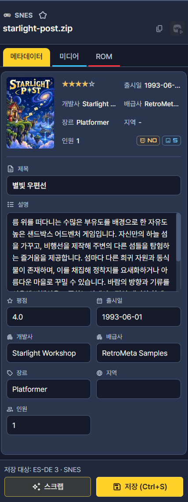
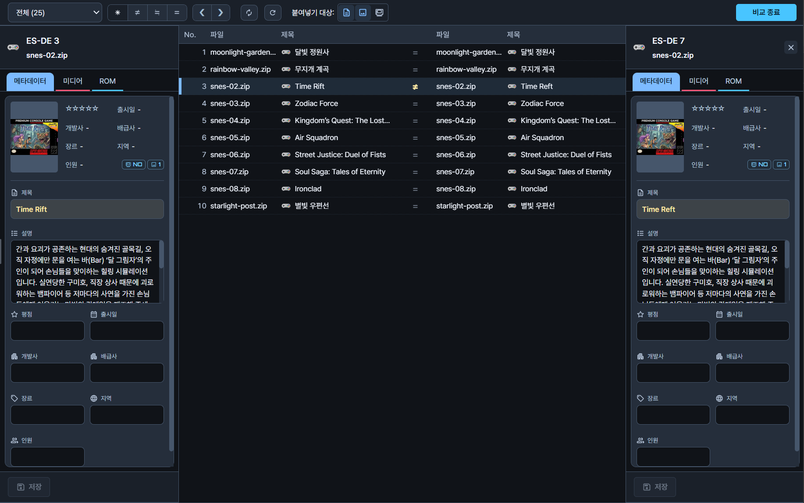
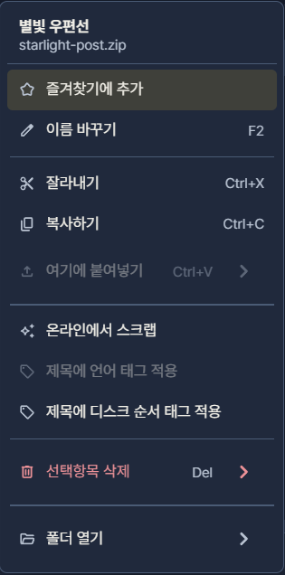
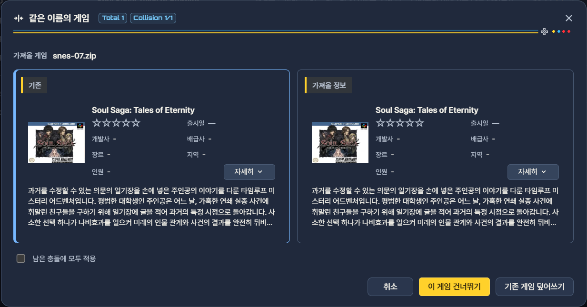
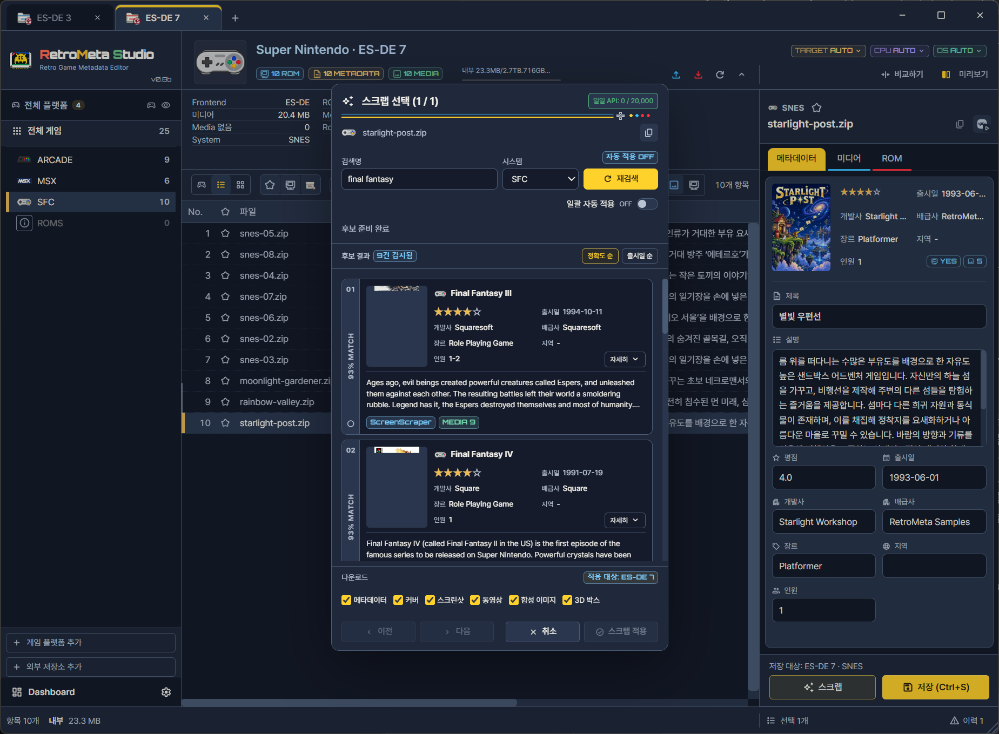

여러 게임목록을
하나의 화면에서
편집하고, 비교하고, 옮겨보세요.
RetroMeta Studio는 ES-DE · EmulationStation · Pegasus · LaunchBox형식의 다양한 게임목록들을 읽고 편집하는 Windows용 무료 앱입니다. 제목·설명·커버를 수정하고, 두 목록의 차이를 나란히 보고, 선택한 게임들을 다른 목록으로 보낼 수 있습니다.

핵심 기능
게임목록 편집
제목·설명·평점 등을 빠르게 편집하고, 커버·스크린샷·동영상·매뉴얼을 한눈에 보며 바꿉니다. 메타데이터를 텍스트 형식으로 직접 편집할 수도 있습니다.

편집 기능 더 알아보기 →게임목록 비교
두 게임목록의 차이를 나란히 비교합니다. 누락된 메타데이터를 다른 쪽에 바로 채우고, 차이가 있는 부분만 강조해서 볼 수 있습니다.

비교 기능 더 알아보기 →복사하기
선택한 게임의 메타데이터를 다른 게임목록으로 복사합니다. 탐색기의 복사·붙여넣기처럼 동작합니다.

복사 기능 더 알아보기 →컬렉션에서 가져오기
현재 게임목록에 맞는 메타데이터를, 열어 둔 다른 게임목록에서 매칭된 게임을 찾아 가져와 적용합니다.

가져오기 더 알아보기 →온라인 스크랩
ScreenScraper에서 해당 게임을 검색해 메타데이터와 미디어를 가져옵니다. 적용할 항목만 골라 반영할 수 있습니다. (계정 필요)

스크랩 더 알아보기 →어떤 것부터 해야 할 지 모르시겠다고요? 여기에서 차근차근 따라해 볼까요?.
고급 기능
수많은 게임을 체계적으로 관리하고 싶은 게임 컬렉터들에게 적합한 기능입니다.
기본적인 작업 흐름
게임목록 열기
PC 폴더의 게임목록을 열어 컬렉션(Collection)으로 등록합니다. 여러 개를 탭으로 열어 둘 수 있습니다.
비교하고 편집하기
다른 컬렉션이나 스크랩으로 메타데이터를 가져오고, 부족한 것은 직접 편집합니다. 컬렉션끼리 비교하여 차이를 채워 넣습니다.
게임목록 적용하기
선택한 게임의 정보·미디어·ROM을 원하는 곳으로 복사하거나 저장합니다.


지원 환경
| 항목 | 내용 |
|---|---|
| 운영체제 | Windows x64 |
| 호환 프론트엔드 | ES-DE, EmulationStation, Pegasus, LaunchBox |
| 연결 환경 | Windows PC, Android: MTP·ADB |
| 제공 범위 | 메타데이터 및 게임 ROM은 이 앱에서 직접 제공하지 않습니다. |
다운로드
다운로드 v0.8b
공개 준비 중입니다. 공개되면 이곳에 받기 버튼이 나타납니다.
- Setup.exe — 윈도우즈 환경에서 설치 후 사용합니다.
- Portable.zip — 설치하지 않고 압축을 풀어 바로 실행합니다.
문의와 라이선스
이 앱을 사용하다가 궁금한 점이나 문제 보고가 필요한 경우 Q&A에 올려 주시기 바랍니다. 문제는 증상과 함께 로그 파일, 재현 순서, 오류 화면 등을 함께 올려 주시면 감사하겠습니다. 로그의 계정과 개인 경로는 지우고 올립니다.
외부 구성요소와 미디어의 권리는 각 소유자에게 있습니다. 설치 폴더의 NOTICE.md와 라이선스 원문을 확인합니다.
라이선스 안내 (예시)
아래는 오픈소스 구성요소에 흔히 쓰이는 라이선스의 요약입니다. 실제로 포함된 구성요소와 라이선스는 설치 폴더의 NOTICE.md를 기준으로 합니다.
| 라이선스 | 주요 내용 | 배포할 때 지킬 점 |
|---|---|---|
| MIT | 사용·복사·수정·배포가 자유롭습니다. | 저작권 고지와 라이선스 문구를 포함합니다. |
| Apache-2.0 | MIT와 비슷하며 특허 사용권이 명시되어 있습니다. | 라이선스 사본과 NOTICE를 포함하고, 수정한 파일은 변경 사실을 표시합니다. |
| BSD-3-Clause | 사용·수정·배포가 자유롭습니다. | 고지를 포함하고, 원저작자의 이름을 보증·홍보에 쓰지 않습니다. |
| MPL-2.0 | 파일 단위로 소스를 공개해야 하는 약한 카피레프트입니다. | 수정한 MPL 파일의 소스를 공개합니다. |
| LGPL-3.0 | 라이브러리를 앱에 연결해 쓸 수 있는 카피레프트입니다. | 라이브러리를 수정했다면 그 부분을 공개하고, 사용자가 교체할 수 있게 합니다. |
| GPL-3.0 | 파생물을 배포할 때 같은 라이선스로 소스를 공개해야 합니다. | 앱에 포함하지 않고 별도 프로그램으로 연동하는 방식을 권장합니다. |
| CC BY 4.0 | 문서·이미지 등 저작물에 쓰는 라이선스입니다. | 출처와 라이선스를 표시합니다. |